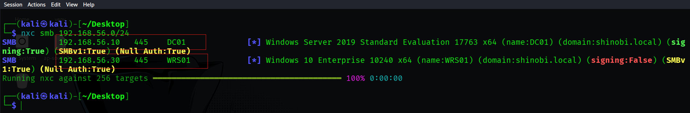
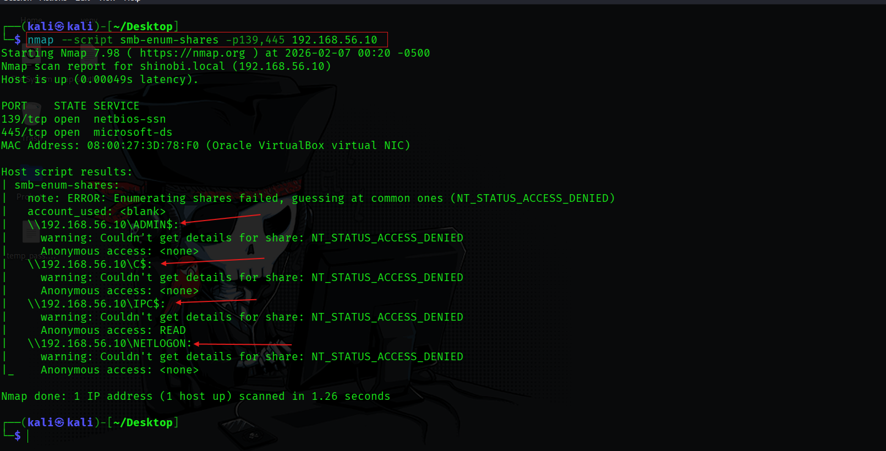
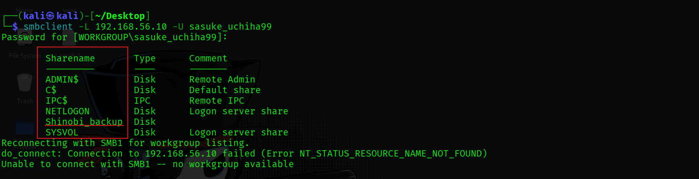
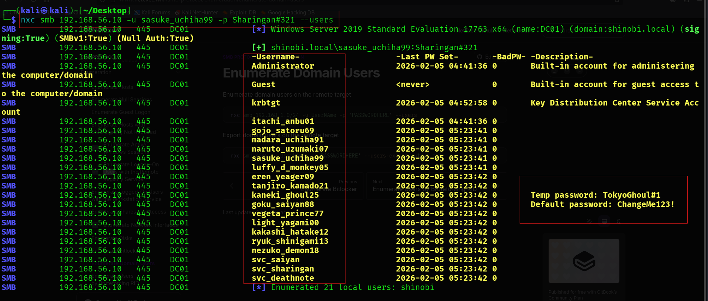

SMB Enumeration & Reconnaissance
Objective: Identify active SMB servers, their operating system versions, and signing requirements to map out potential targets for relay attacks.
nxc)Bash
nxc smb 192.168.56.0/24
True (Required), making it immune to NTLM Relaying.False (Not Required), marking it as a vulnerable target for Relay attacks.SMBv1: True indicates a significant security regression enabled on the network.
Objective: Check for critical, remote code execution vulnerabilities (like MS17-010) before attempting authentication.
nmap --script smb-vuln* -p 445 192.168.56.10
DC01 returned NT_STATUS_ACCESS_DENIED for MS10-061 and false for MS10-054. No immediate RCE vulnerabilities were found via unauthenticated scanning.Objective: Attempt to list file shares without valid credentials (Null Session) to find sensitive data exposed to the network.
smb-enum-shares)nmap --script smb-enum-shares -p 139,445 192.168.56.10
ADMIN$, C$, and NETLOGON denied anonymous access.IPC$ share allowed READ\ access, which often permits further enumeration of User SIDs (RID Cycling) even without full credentials.
Hypothesis: Using credentials obtained from a previous attack (e.g., LLMNR Poisoning) or a weak default password, we authenticated as user sasuke_uchiha99 to uncover hidden shares.
Bash
# List Shares
smbclient -L 192.168.56.10 -U sasuke_uchiha99
# Connect and Exfiltrate
smbclient //192.168.56.10/Shinobi_backup -U sasuke_uchiha99
Shinobi_backup.temp_pass.txt.Konoha@123.
Objective: With valid access established, we perform a full directory listing to map out high-value targets (Admins) and service accounts.
nxc) & Enum4linux-ngBash
# Dump Domain Users
nxc smb 192.168.56.10 -u sasuke_uchiha99 -p 'Sharingan#321' --users
Administrator (Built-in Admin)krbtgt (Key Distribution Center Service Account)itachi_anbu01, madara_uchiha91 (Potential high-privilege targets)SHINOBI and successfully mapped the domain controllers via LDAP/SMB.
{kind=link}
{kind=link}
{kind=link}
{kind=link}
{kind=link}
{kind=link}
{kind=link}